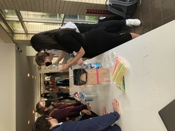
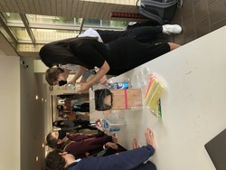
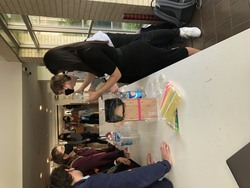

Kea Thong Chea
At since young age, I wanted to build an down my own company. Specifically, my passion is in a variety of things such as game developing and fitness (Bodybuilding and recreation). I have been an international student in the US since I was 13, starting with High school experiences in New York. During my time there I have made many connections with other students, parents and even other staff. In the earlier years of high school, I was involved with fundraisers that were supervised by staff such as teachers and such. Furthermore, the experiences that I've gained the most from my time there was being able to build groups and creating fundraisers year-to-year. Their fundraisers are just made by students that form independent groups with different ideas. I have reflected and gained a lot of experiences from the project for working as the meeting manager, treasurer and project manager. I have experience in planning projects, planning meetings and accounting treasury. Some of my fundraising projects have even earned $1000+ in a span of 3 months. As part of my leisure time in high school, I have voluntarily participated as a fellow student residential Advisor for 2 years, throughout my junior and senior year of high school while in the process of earning an international Baccalaureate high school degree. Afterwards, in college, I have invested into earning a masters’ degree with a masters in Business Management degree and acquired certification in marketing as well. I have experiences working with my parents' pastry shop from a younger age in my own country, and further expanded by experiences overseas in the US. I have invested some leisure time to build a foundation for computer science coding languages. I was offered small jobs for customizing code through my business of my websites that I have made for my side business and marketed through social media such as Instagram, Facebook and many more. Eventually, I received a job offer to be a developer for UnrealEngine for game development. At the same time, during my leisure time from work, I invested in the progress of earning certification for personal training, specifically in recreations and varieties of training studies. As of now, I’m attempting to build funds to fund for my future business in fitness and managing it.
At since young age, I wanted to build an down my own company. Specifically, my passion is in a variety of things such as game developing and fitness (Bodybuilding and recreation). I have been an international student in the US since I was 13, starting with High school experiences in New York. During my time there I have made many connections with other students, parents and even other staff. In the earlier years of high school, I was involved with fundraisers that were supervised by staff such as teachers and such. Furthermore, the experiences that I've gained the most from my time there was being able to build groups and creating fundraisers year-to-year. Their fundraisers are just made by students that form independent groups with different ideas. I have reflected and gained a lot of experiences from the project for working as the meeting manager, treasurer and project manager. I have experience in planning projects, planning meetings and accounting treasury. Some of my fundraising projects have even earned $1000+ in a span of 3 months. As part of my leisure time in high school, I have voluntarily participated as a fellow student residential Advisor for 2 years, throughout my junior and senior year of high school while in the process of earning an international Baccalaureate high school degree. Afterwards, in college, I have invested into earning a masters’ degree with a masters in Business Management degree and acquired certification in marketing as well. I have experiences working with my parents' pastry shop from a younger age in my own country, and further expanded by experiences overseas in the US. I have invested some leisure time to build a foundation for computer science coding languages. I was offered small jobs for customizing code through my business of my websites that I have made for my side business and marketed through social media such as Instagram, Facebook and many more. Eventually, I received a job offer to be a developer for UnrealEngine for game development. At the same time, during my leisure time from work, I invested in the progress of earning certification for personal training, specifically in recreations and varieties of training studies. As of now, I’m attempting to build funds to fund for my future business in fitness and managing it.
At since young age, I wanted to build an down my own company. Specifically, my passion is in a variety of things such as game developing and fitness (Bodybuilding and recreation). I have been an international student in the US since I was 13, starting with High school experiences in New York. During my time there I have made many connections with other students, parents and even other staff. In the earlier years of high school, I was involved with fundraisers that were supervised by staff such as teachers and such. Furthermore, the experiences that I've gained the most from my time there was being able to build groups and creating fundraisers year-to-year. Their fundraisers are just made by students that form independent groups with different ideas. I have reflected and gained a lot of experiences from the project for working as the meeting manager, treasurer and project manager. I have experience in planning projects, planning meetings and accounting treasury. Some of my fundraising projects have even earned $1000+ in a span of 3 months. As part of my leisure time in high school, I have voluntarily participated as a fellow student residential Advisor for 2 years, throughout my junior and senior year of high school while in the process of earning an international Baccalaureate high school degree. Afterwards, in college, I have invested into earning a masters’ degree with a masters in Business Management degree and acquired certification in marketing as well. I have experiences working with my parents' pastry shop from a younger age in my own country, and further expanded by experiences overseas in the US. I have invested some leisure time to build a foundation for computer science coding languages. I was offered small jobs for customizing code through my business of my websites that I have made for my side business and marketed through social media such as Instagram, Facebook and many more. Eventually, I received a job offer to be a developer for UnrealEngine for game development. At the same time, during my leisure time from work, I invested in the progress of earning certification for personal training, specifically in recreations and varieties of training studies. As of now, I’m attempting to build funds to fund for my future business in fitness and managing it.
Experience
Developer
• Developed websites for company UnrealEngine
• Speaker at hack-a-thons
• Experience with HTML, CSS, C++, Javascript, Photoshop
Cashier
• Responsible for checking out customers
• Working in the supplies restock and delivery sections... etc
Teaching Assistant
• Ran sessions to help students learn how to code and other sections for business management
• Reviewed and graded student coding projects
• Created educational content to help promote student education
• TA'd for over 200 students each academic quarter
Fundraising treasurer, metting manager, and project manager
• Account for the earninga and supplies that are being prcessed during the projects.
• Setting meeting dates and times for groups members to discuss and assess the project status and plannings.
• Managing the project and analyze to approach the fundraising with group members. Including brainstorming for project ideas and votes on projects.
Supervising assistant
• Responsible for taking care of certain times the superivisor needs additional help
• Working in making sure the earning for the day checkout time is on time. etc
Education
UC Riverside
University of California Riverside
University of California Riverside
Portfolio

 

